Gorr special B : Onde sismique (grappler : zone au sol, lanceur)
| Repos | Gorr : dos large, souffle de taureau |
|---|---|
| Garde | Gorr : bras croises, epaules rentrees |
| Victoire | Gorr : se bat la poitrine, rugit |
| Defaite | KO allonge : un KO ne se releve jamais (corps a terre, aucune pose debout ni a genoux). |
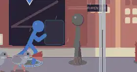

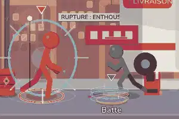
Sora special B : Frappe fantome (duelliste / contre : fente qui traverse)
| Repos | Sora : un bras en pointe, calme |
|---|---|
| Garde | Sora : dos droit, main au fourreau |
| Victoire | Sora : salue, referme le fourreau |
| Defaite | KO allonge : un KO ne se releve jamais (corps a terre, aucune pose debout ni a genoux). |


Tetsu special B : Series tigre / montagne (contre / tank : series au corps a corps)
| Repos | Tetsu : statue, poings serres |
|---|---|
| Garde | Tetsu : poings au menton |
| Victoire | Tetsu : croise les bras, ne bouge pas |
| Defaite | KO allonge : un KO ne se releve jamais (corps a terre, aucune pose debout ni a genoux). |


Nova special B : Tempete de Ki (zoner : salve puissante a distance)
| Repos | Nova : main en poche, l'autre orbite |
|---|---|
| Garde | Nova : paumes ouvertes qui orbitent |
| Victoire | Nova : envoie le message, clin d'oeil |
| Defaite | KO allonge : un KO ne se releve jamais (corps a terre, aucune pose debout ni a genoux). |


Kage special B : Kunai (technique : projectiles multiples)
| Repos | Kage : bas, bras cache, aux aguets |
|---|---|
| Garde | Kage : accroupi, epaules basses |
| Victoire | Kage : s'efface, reapparait accroupi |
| Defaite | KO allonge : un KO ne se releve jamais (corps a terre, aucune pose debout ni a genoux). |
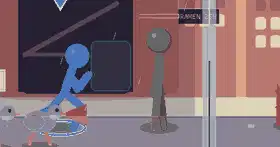
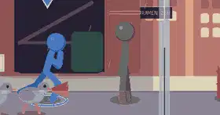

Bo special B : Lame de lune (zoner de portee : grand arc tranchant)
| Repos | Bo : appuye sur son baton |
|---|---|
| Garde | Bo : baton a deux mains, appuis larges |
| Victoire | Bo : plante le baton, hoche la tete |
| Defaite | KO allonge : un KO ne se releve jamais (corps a terre, aucune pose debout ni a genoux). |


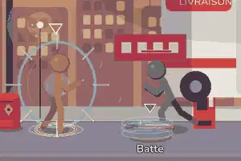
Piege special B : Pieges (technique : piege au sol)
| Repos | Piege : accroupi, ajuste un collet |
|---|---|
| Garde | Piege : mains basses, aux aguets |
| Victoire | Piege : declenche un dernier piege |
| Defaite | KO allonge : un KO ne se releve jamais (corps a terre, aucune pose debout ni a genoux). |


Zui special B : Rocher (imprevisible : rochers qui rebondissent)
| Repos | Zui : tangue, gourde a la bouche |
|---|---|
| Garde | Zui : bras ballants qui se couvrent |
| Victoire | Zui : leve la gourde, trebuche |
| Defaite | KO allonge : un KO ne se releve jamais (corps a terre, aucune pose debout ni a genoux). |
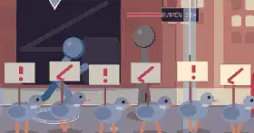

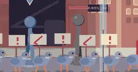
Yume special B : Barriere (controle : contre / repli)
| Repos | Yume : somnolente, ours serre |
|---|---|
| Garde | Yume : ours contre la poitrine |
| Victoire | Yume : se pelotonne sur l'oreiller |
| Defaite | KO allonge : un KO ne se releve jamais (corps a terre, aucune pose debout ni a genoux). |


Planches de 16 repos
Planche : 16 repos de Gorr
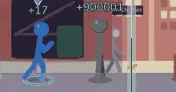

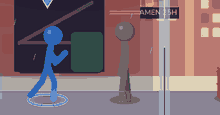
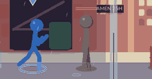
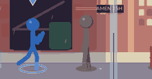
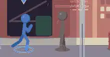


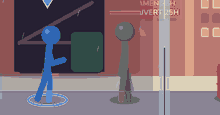
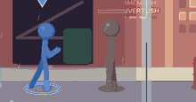

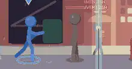
Planche : 16 repos de Nova
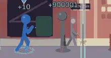
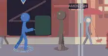
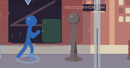
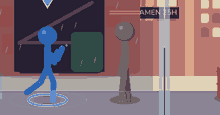
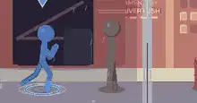
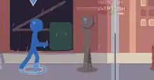
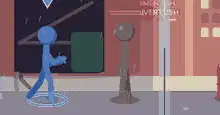
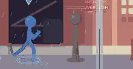
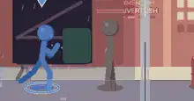
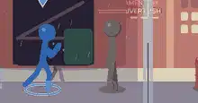
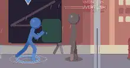
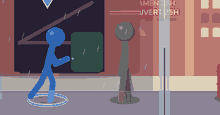
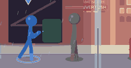
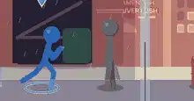
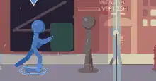
Planche : 16 repos de Yume
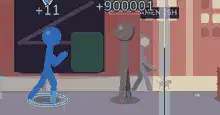

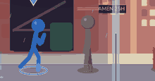
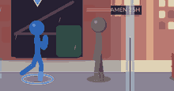


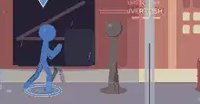

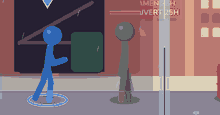
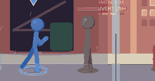

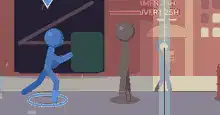